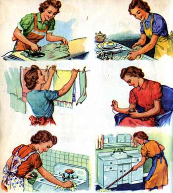

1. Realizar actividades proporcionadas por los docentes
existen estrategias de enseñanza que son implementadas por los docentes y que son muy eficientes para que se cumplan los objetivos definidos en los alumnos. Todas son distintas y no hay ninguna definitiva o que funcione más que otras, por eso, es recomendable que existan diferentes maneras de enseñar a lo largo de la vida académica de los jóvenes. Muchos profesionales de la docencia se valen de estas estrategias de enseñanza para ofrecer una experiencia de aprendizaje sencilla y llevadera. y la tecnologia en esta epidemia a tenido un papel importante en esta crisis permitiendo el acercamiento con los estudiantes, y que en este tiempo no se pierda la rutina y el tabajo que se venia realizando.
2. Ayudar en casa
 Nuestro hogar como lugar donde pasamo mayor parte de nuestro tiempo podemos hacer le una limpieza. lo ideal es pasar tiempo en la cocina aprendiendo a cocinar y dejar que nuestra mente se libere y distraiga. le haresmo una lista de siertas cosas que puede hacer para no aburrirse :
3. Pasar tiempo con la familia
 Este evento si nos beneficia sobre este tema, ya que gracias a el en mi familia hay una bonita relacion, estos días, las familias conviven mucho más de lo habitual y se pueden centrar en cosas para las que normalmente no hay tiempo, Si el reparto de las tareas y cuidados es igualitario en la pareja, será más fácil que niños y niñas crezcan asumiendo que las tareas se deben realizar sin diferencias. Marian Moreno Llaneza, experta en coeducación y profesora de secundaria lo explica: "El ejemplo es lo fundamental tanto en casa como en las escuelas. De nada sirven las palabras si no las acompañan los actos. El gran reto de la igualdad es ser coherente con lo que se dice y los chicos y chicas pillan rápidamente esas contradicciones y actúan en consecuencia. Sobre todo los adolescentes valoran mucho esa coherencia, que "seas legal", les aporta equilibrio, seguridad, saber a qué atenerse".
Este evento si nos beneficia sobre este tema, ya que gracias a el en mi familia hay una bonita relacion, estos días, las familias conviven mucho más de lo habitual y se pueden centrar en cosas para las que normalmente no hay tiempo, Si el reparto de las tareas y cuidados es igualitario en la pareja, será más fácil que niños y niñas crezcan asumiendo que las tareas se deben realizar sin diferencias. Marian Moreno Llaneza, experta en coeducación y profesora de secundaria lo explica: "El ejemplo es lo fundamental tanto en casa como en las escuelas. De nada sirven las palabras si no las acompañan los actos. El gran reto de la igualdad es ser coherente con lo que se dice y los chicos y chicas pillan rápidamente esas contradicciones y actúan en consecuencia. Sobre todo los adolescentes valoran mucho esa coherencia, que "seas legal", les aporta equilibrio, seguridad, saber a qué atenerse".
4. Juego
Aveces en mi tiempo libre me pongo a jugar cualquier juego virtual o de mesa.
Por ejemplo:
- Ajedrez
- Naipes o cartas
- Monopoly
- Dominó
- Rompecabezas
- Backgammon
- Damas
- Damas chinas
5. Leer
Además de ser educativo, me pongo a leer para despejar la mente de todo lo que esta pasando en la actualidad